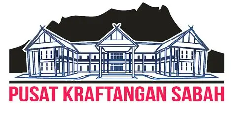
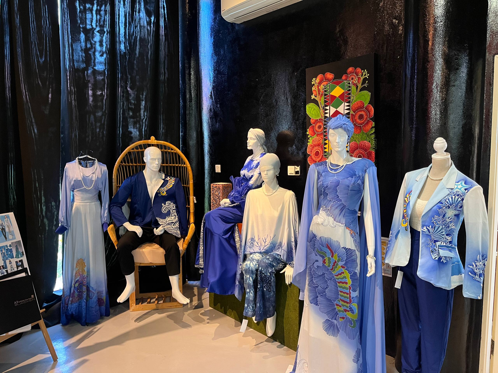
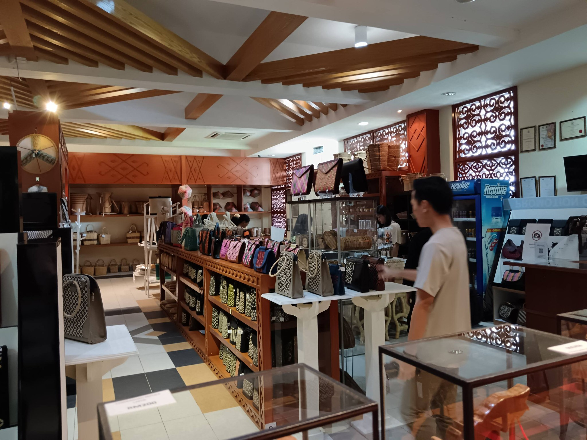
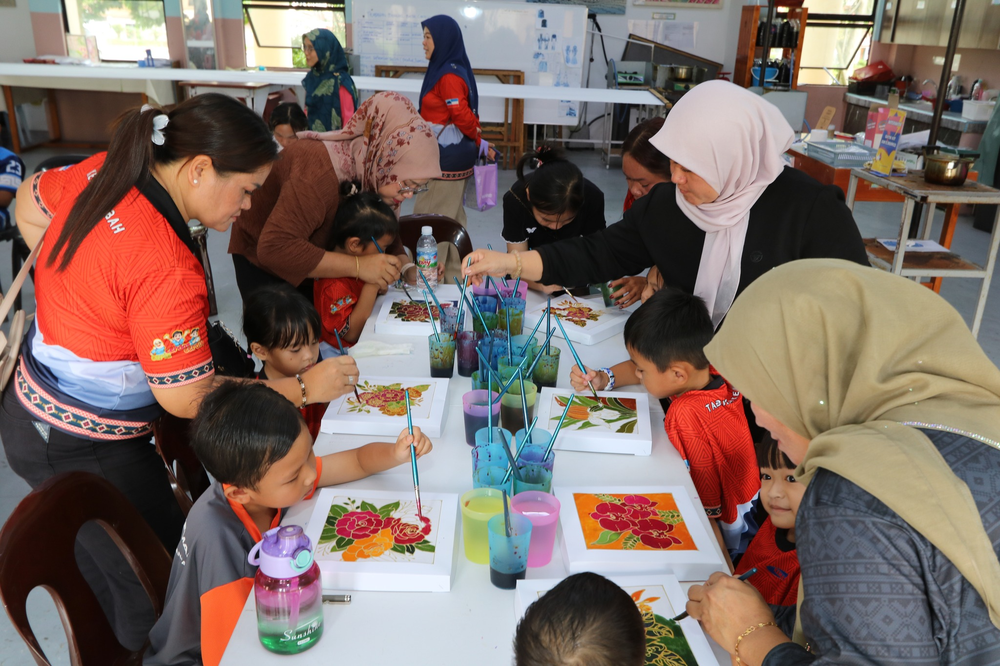

To foster cultural diversity through craft-making and skills training, preserving heritage while creating sustainable livelihoods.
PKS features a two-storey building with the ground floor dedicated to exhibitions and retail of handicraft products including textiles, batik, rattan, bamboo, ceramics and glassware.
Visitors can explore the Textile Gallery, Handicraft Gallery and Digital Gallery while observing artisans at work and participating in hands-on workshops such as batik painting and weaving.


